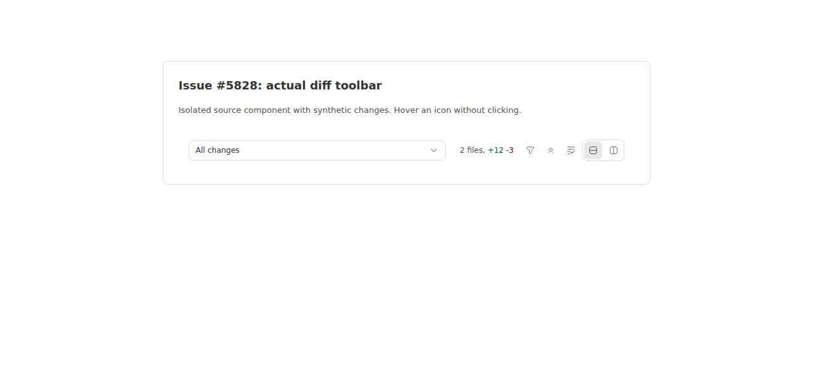

Diff-toolbar controls lack visible hover descriptions
Verdict: REPRODUCED · Root-cause confidence: high · Reproduction label: confirmed-repro
1. Summary
Five icon controls in the diff toolbar expose accessible names but no visible hover descriptions. A focused DOM regression test fails for all eight state-dependent labels on trusted main, and the same test fails again in a second clean checkout. A browser rendering of the actual source component also shows no description after hovering the collapse control. The shared Button component does not create a tooltip from its accessible name; the toolbar never composes the shared Tooltip primitives around these controls.
2. Claims and findings
| Behavior | Finding | Evidence |
|---|---|---|
| Filter action and its active state lack hover text | Verified | Filter files / Close file filter both fail the hover assertion. |
| Bulk collapse and expansion lack hover text | Verified | Collapse all files / Expand all files both fail; the browser screenshot covers the enabled collapse action. |
| Line overflow actions lack hover text | Verified | Wrap diff lines / Disable diff line wrap both fail. |
| Both display-mode controls lack hover text | Verified | Stacked diff view / Split diff view both fail. |
| Button names follow state | Verified at the rendered-component boundary | Each test finds its button by the expected accessible name before hovering; it fails only while looking for the tooltip. |
3. Trusted base and environment
- Repository: public
get-bb/bb; base7e4232ef241b5cdfb7d272cee044fe6f82702c70, fetched from trustedorigin/main. - Linux x86_64; Node 22.19.0; pnpm 9.15.0; Vitest 4.1.1; jsdom; actual React toolbar and shared UI primitives.
- Frozen install succeeded. Initial repository build succeeded: 67 tasks successful.
- Two new temporary worktrees at the identical base; production component source unchanged in both. Only the test is changed for the repeated unit reproduction.
- No app server, host daemon, provider turn, user project, or real runtime data is needed. A temporary Vite fixture used port 48728, then an offline single-document bundle was opened in a local headless Chromium session through BB Browser Automation. It renders the real toolbar using synthetic counts: two files, 12 insertions, three deletions.
4. Exact reproduction
In a fresh checkout of the trusted public repository, check out the recorded base. Save the patch below as /tmp/5828-regression.patch. It extends the existing test helper and adds eight hover cases; it makes no production change.
git checkout --detach 7e4232ef241b5cdfb7d272cee044fe6f82702c70 pnpm install --frozen-lockfile --prefer-offline pnpm exec turbo run build git apply /tmp/5828-regression.patch pnpm exec turbo run test --filter=@bb/app -- src/components/secondary-panel/GitDiffToolbar.test.tsx
Complete regression patch
diff --git a/apps/app/src/components/secondary-panel/GitDiffToolbar.test.tsx b/apps/app/src/components/secondary-panel/GitDiffToolbar.test.tsx
index fa45283eb..db6449664 100644
--- a/apps/app/src/components/secondary-panel/GitDiffToolbar.test.tsx
+++ b/apps/app/src/components/secondary-panel/GitDiffToolbar.test.tsx
@@ -1,15 +1,19 @@
// @vitest-environment jsdom
-import { cleanup, render, screen } from "@testing-library/react";
+import type { ComponentProps } from "react";
+import { cleanup, fireEvent, render, screen } from "@testing-library/react";
import { afterEach, expect, it } from "vitest";
import { TooltipProvider } from "@bb/shared-ui/tooltip";
import { GitDiffToolbar } from "./GitDiffToolbar";
afterEach(cleanup);
-function renderToolbar(isStatsLoading: boolean) {
+function renderToolbar(
+ isStatsLoading: boolean,
+ overrides: Partial<ComponentProps<typeof GitDiffToolbar>> = {},
+) {
return render(
- <TooltipProvider>
+ <TooltipProvider delayDuration={0}>
<GitDiffToolbar
selectionValue="working-tree"
selectionOptions={[{ value: "working-tree", label: "All changes" }]}
@@ -28,6 +32,7 @@ function renderToolbar(isStatsLoading: boolean) {
onDisplayModeChange={() => undefined}
lineOverflowMode="scroll"
onLineOverflowModeChange={() => undefined}
+ {...overrides}
/>
</TooltipProvider>,
);
@@ -46,3 +51,26 @@ it("reports no changes once an empty file list has loaded", () => {
expect(screen.getByText("No changes")).toBeTruthy();
expect(screen.queryByRole("status", { name: "Loading changes" })).toBeNull();
});
+
+it.each([
+ { label: "Filter files", props: {} },
+ { label: "Close file filter", props: { fileFilter: "" } },
+ { label: "Collapse all files", props: {} },
+ { label: "Expand all files", props: { areAllFilesCollapsed: true } },
+ { label: "Wrap diff lines", props: { lineOverflowMode: "scroll" as const } },
+ {
+ label: "Disable diff line wrap",
+ props: { lineOverflowMode: "wrap" as const },
+ },
+ { label: "Stacked diff view", props: {} },
+ { label: "Split diff view", props: { displayMode: "split" as const } },
+])("shows the current $label action on hover", async ({ label, props }) => {
+ renderToolbar(false, { isCollapseAllDisabled: false, ...props });
+ const button = screen.getByRole("button", { name: label });
+
+ expect(screen.queryByRole("tooltip")).toBeNull();
+ expect(button.hasAttribute("title")).toBe(false);
+ fireEvent.pointerMove(button, { pointerType: "mouse" });
+
+ expect((await screen.findByRole("tooltip")).textContent).toBe(label);
+});
Expected: hovering each enabled icon exposes a standard tooltip whose text matches the current action. All ten tests, including the two existing loading-summary tests, pass.
Actual, in both clean-checkout runs:
TestingLibraryElementError: Unable to find role="tooltip"
Test Files 1 failed (1)
Tests 8 failed | 2 passed (10)
Exit status: 1. All eight failures occur at screen.findByRole("tooltip"), after successfully finding the expected button. The tooltip provider is present, has zero delay, and the collapse action is explicitly enabled, ruling out absent provider, wait duration, or disabled controls as explanations.


5. Verification in a second clean checkout
The same agent created a second detached worktree at the full base SHA, performed another frozen install, copied only the authored regression test, and reran the same Turbo command. The test task was a cache miss in both runs; this is not a cached failure replay.
| Run | Production source | Result |
|---|---|---|
| First temporary checkout | Trusted base, unchanged | 8 hover failures; 2 existing tests passed; exit 1 |
| Second clean temporary checkout | Same trusted base, unchanged | 8 hover failures; 2 existing tests passed; exit 1 |
No claim required correction after the second run. This is a direct repeat by the same agent, not independent verification. No live-process data directory or service ports are required by either test run.
6. Root cause
GitDiffToolbar renders the five actions as bare shared Buttons. Their aria-label values describe the action to assistive technology, but do not render hover text. The state branches correctly choose accessible labels; they have no corresponding TooltipContent.
The shared Button forwards native button props and intentionally omits the native title prop from its contract; it has no implicit tooltip behavior. The app's standard Tooltip, TooltipTrigger, and TooltipContent provide that behavior when composed explicitly.
The two pre-existing toolbar tests assert only loading and empty-summary behavior, so they cannot detect this missing user interaction. The added regression exercises real component rendering and a pointer event rather than searching source text or mocking tooltip behavior.
7. Fix proposal and existing pull request
Compose each action with the existing shared tooltip primitives and reuse the same state-dependent action text for accessibility and visible hover feedback. Preserve button callbacks, disabled state, pressed state, and display-mode grouping. Retain the hover regression cases.
Open PR #5829 already has a GitHub closing reference to issue #5828. Its metadata reports one changed file, 125 additions and 87 deletions. The inspected diff wraps all five actions in the existing shared tooltip primitives and includes state-dependent text, which addresses the reproduced omission at its owner. No test file is included in that diff.
Static assessment only: the PR branch was not checked out or executed, and no passing test claim is made for it. A fresh automated fix was skipped to avoid duplicating this linked open PR. No fix branch, commit, or duplicate PR was created.
8. Related issue and limits
Issue #1184 is another missing-tooltip report classified as Bug; it informed classification, not execution. This report covers the source-component boundary and the listed states, not an end-to-end workspace-opening journey, touch long-press behavior, or a disabled-control tooltip policy. The isolated offline browser fixture may use fallback fonts; that does not change tooltip wiring.
Untrusted-data handling: issue prose, including its suggested implementation, and linked-PR metadata/diff were treated only as claims or static evidence. No supplied instruction, command, patch, branch, external URL, or test was executed. Only trusted main and an independently authored regression/fixture were run. Raw logs and scratch code remain outside the public reports repository; the complete repeatable regression is embedded above.